Tactile Shared Autonomy
Force-aware adaptation explicitly bridges the control and interaction gap during physical contact.
arXiv 2026 · Robotics
1Nanyang Technological University, Singapore · 2OOJU, USA · †Corresponding author
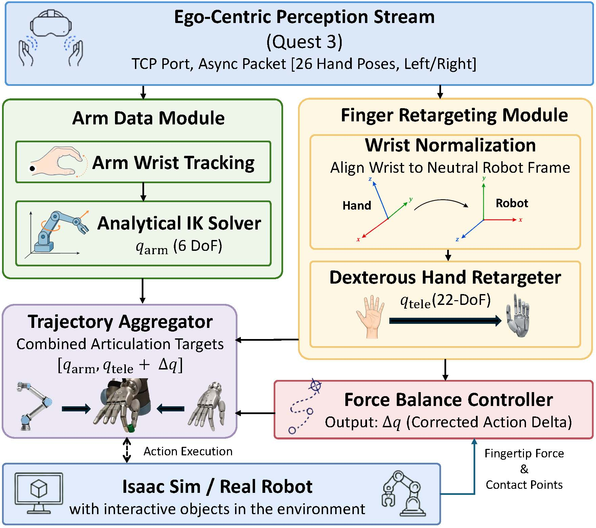
Overview
Fine-grained, bimanual dexterous manipulation remains a foundational challenge in robotics. Traditional teleoperation systems often fail in contact-rich tasks because embodiment gaps hinder accurate kinematic mapping, while tactile and force feedback remain absent. DexTeleop-0 introduces a tactile-driven adaptation strategy that translates coarse human tracking intents into precise, force-compliant robotic commands with tactile sensing.
By estimating contact points and leveraging a tactile-enabled fingertip force-sensing profile, the system dynamically computes localized corrections using operational space Jacobians. Across simulation and real-world hardware, DexTeleop-0 improves task success rates and execution efficiency in robust grasping, disturbance-resilient manipulation, and complex dexterous tasks.
Force-aware adaptation explicitly bridges the control and interaction gap during physical contact.
Visual-tactile feedback is closed through contact force sensing and predictive interaction modeling.
A lightweight, hardware-agnostic stack maps VR hand and wrist tracking into coordinated bimanual commands.
The full-stack system is validated on aligned IsaacSim and physical dual-arm dexterous platforms.
Core Intuition
Vision-only teleoperation captures human intent, but it cannot directly sense pressure, slip, or local force imbalance. DexTeleop-0 keeps the operator's command as the nominal trajectory while adding small tactile residual corrections that restore stable contact geometry.
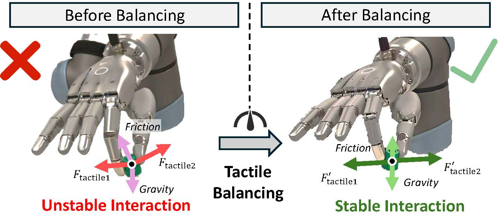
Method
A Meta Quest 3 headset captures human hand joints and wrist poses without external motion capture. Human hand states are represented as transformations \(\mathcal{H} = \{\mathbf{T}_1,\dots,\mathbf{T}_M\}, \mathbf{T}_i \in SE(3)\), while wrist motion provides \(\mathbf{T}_w \in SE(3)\).
Arm IK maps wrist pose to \( \mathbf{q}_a \), while vector-based hand retargeting maps 26 tracked human hand joints to a 22-DoF dexterous hand. A robust Huber objective and temporal regularization suppress tracking outliers and jitter.
For each active fingertip, tactile sensing estimates contact force \( \mathbf{f}_i^w \) and contact point \( \mathbf{p}_i^w \). A logistic hysteresis weight \(w_i \in [0,1]\) smooths transitions between release, uncertain contact, and reliable contact.
The executed command is \( \mathbf{q}_{final}=\mathbf{q}_{tele}+\Delta\mathbf{q} \). A box-constrained QP solves residual joint updates at 30 Hz, combining local fingertip force tracking with object-level force-torque balance.
Media
Results
A · Sim-to-Real Alignment
DexTeleop-0 is evaluated in both NVIDIA IsaacSim and on a physical bimanual dexterous platform. Each branch pairs a 6-DoF UR7e arm with a 22-DoF Sharpa Wave dexterous hand, producing a 56-DoF control problem driven by egocentric Meta Quest 3 tracking. The aligned setup lets the same teleoperated trajectories be replayed under controlled physical variation before deployment on hardware.
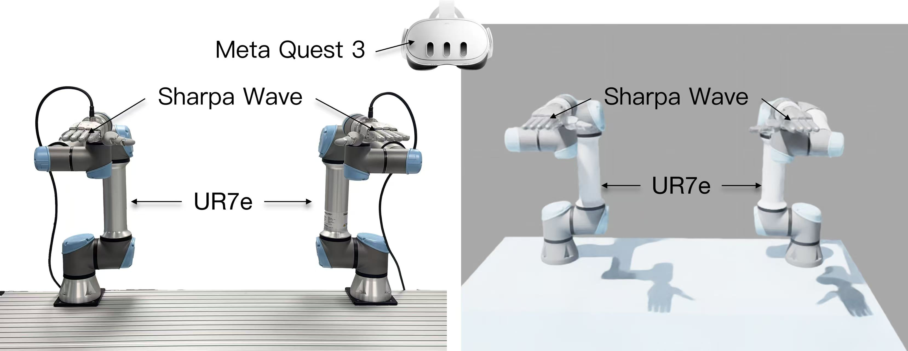
B · Simulation and Real Robot Results
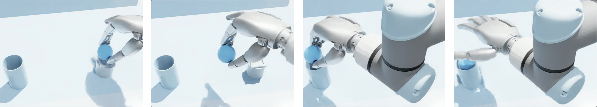
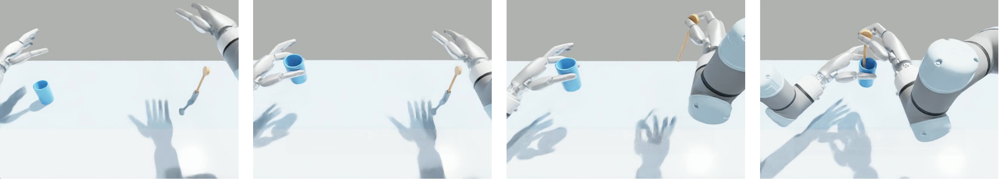
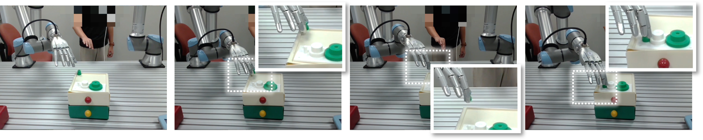
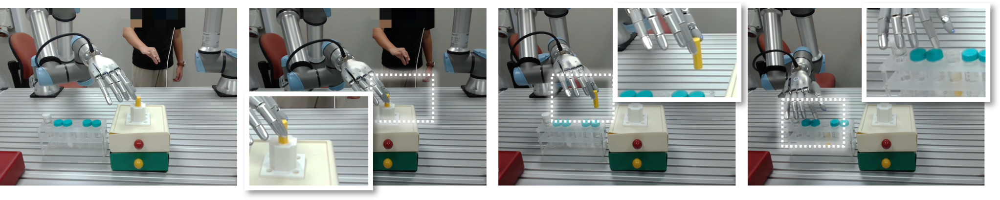
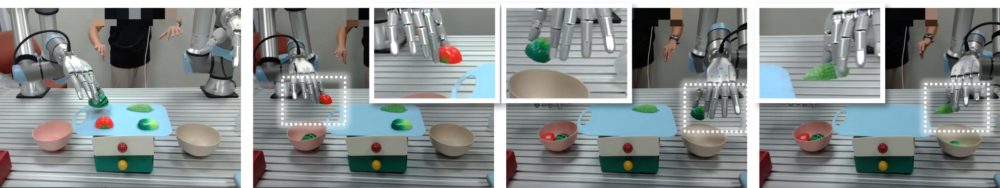
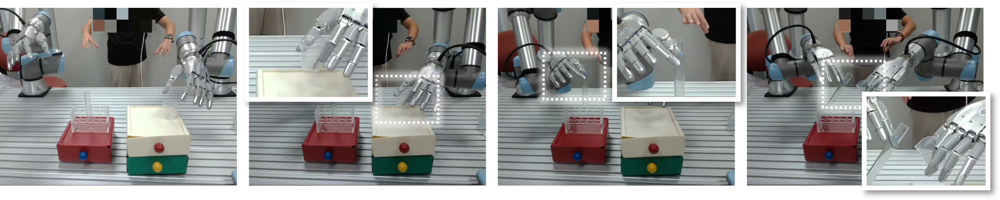
C · Force Profile Analysis
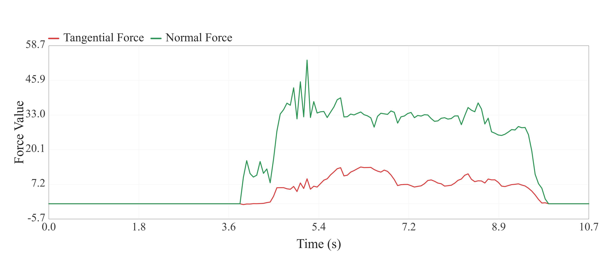
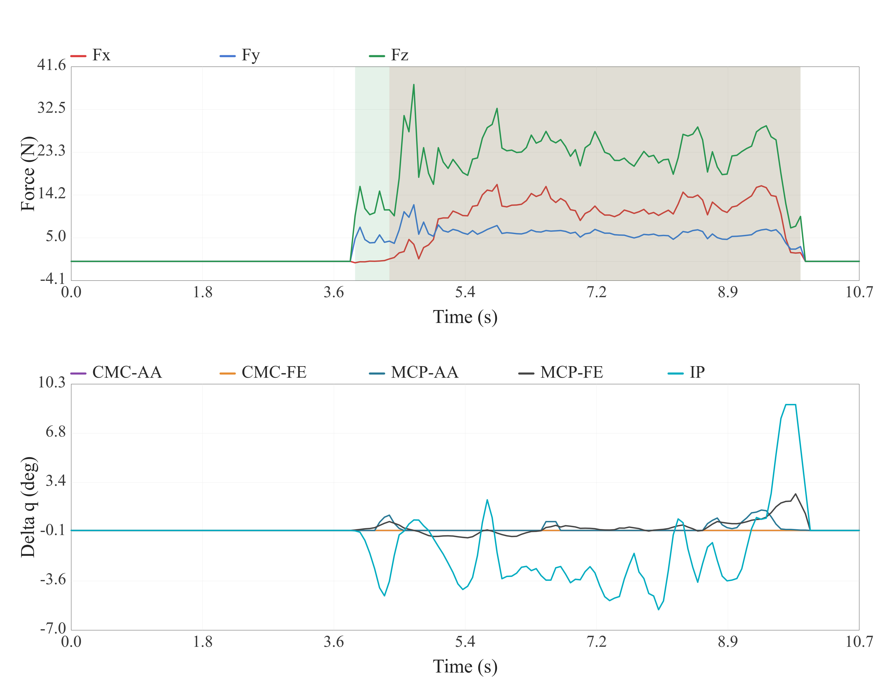
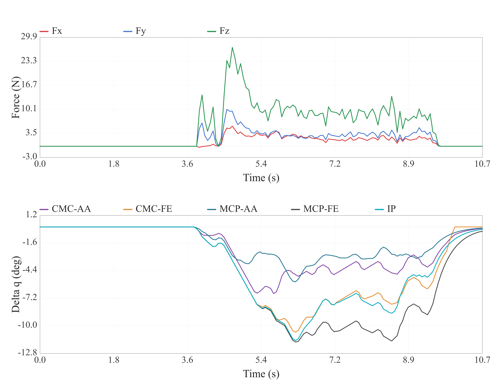
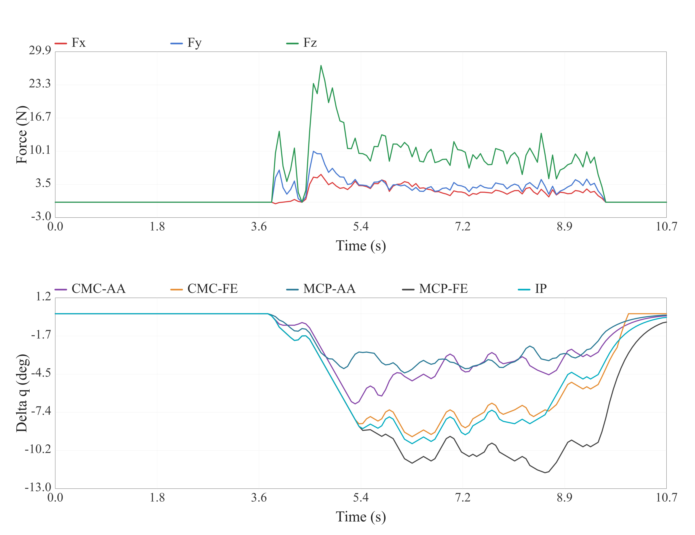
Quantitative Highlights
| Scene | Method | Final Stage | Force (N) |
|---|---|---|---|
| Ball Assembly | No Residual | 4% | 31.58 ± 10.48 |
| Ball Assembly | DexTeleop-0 | 97% | 11.15 ± 5.01 |
| Stir in Cup | No Residual | 60% | 15.56 ± 6.59 |
| Stir in Cup | DexTeleop-0 | 59% | 7.93 ± 2.67 |
| Task | Best Baseline | DexTeleop-0 | Metric |
|---|---|---|---|
| Gear Mesh | 42.86% | 57.14% | Stage 2 |
| Peg Insertion | 62.86% | 60.00% | Stage 2 |
| Food Sorting | 57.14% | 74.29% | Stage 4 |
| Tube Operation | 57.14% | 77.14% | Stage 3 |
For fuller quantitative breakdowns and extended analysis, please refer to the arXiv paper.
Citation
@article{liu2026dexteleop0,
title={DexTeleop-0: Force-Aware Bimanual Dexterous Teleoperation with Ego-Centric Perception towards Shared Autonomy},
author={Liu, Haichao and Jiang, Yuyao and Park, Hyunsun and Xue, Yuanjiang and Wang, Ziwei},
journal={arXiv preprint arXiv:2606.23431},
year={2026},
url={https://arxiv.org/abs/2606.23431}
}